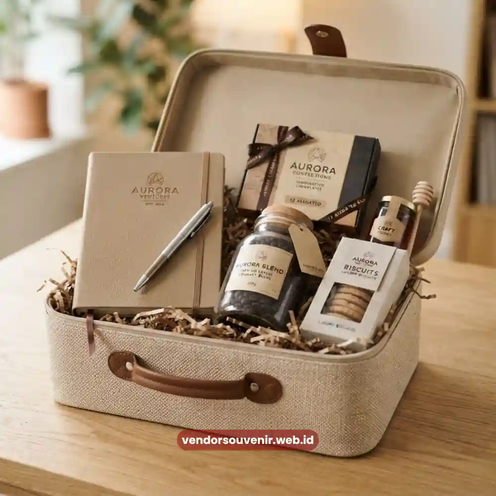

Daftar Isi
Makna hampers ucapan terima kasih bagi klien terletak pada pesan penghargaan tulus yang disampaikan melalui perhatian terhadap detail, bukan semata pada nilai materi dari produk yang diberikan.
Hampers yang disusun dengan penuh pertimbangan mampu menyampaikan rasa hormat dan pengakuan atas kontribusi klien dalam hubungan bisnis yang telah terjalin. Nilai emosional inilah yang membedakan hampers bermakna dari sekadar hadiah formal tanpa kesan mendalam.
Apa Makna Sebenarnya dari Hampers Ucapan Terima Kasih bagi Klien?
Bagi klien, hampers ucapan terima kasih dimaknai sebagai bukti nyata bahwa kontribusi dan kepercayaan yang telah diberikan tidak dianggap remeh oleh perusahaan mitra. Pemberian hampers menegaskan bahwa hubungan bisnis yang terjalin tidak hanya bersifat transaksional, tetapi juga diwarnai dengan penghargaan personal.
Makna ini akan semakin kuat apabila hampers disusun dengan mempertimbangkan preferensi dan karakter klien secara spesifik, bukan sekadar paket standar yang sama untuk semua pihak.
Bagaimana Hampers Membangun Loyalitas dan Kepercayaan Bisnis?
Loyalitas klien tidak selalu dibangun melalui negosiasi harga atau penawaran komersial semata, tetapi juga melalui pengalaman emosional positif yang dirasakan sepanjang hubungan kerja sama.
Hampers yang diberikan pada momen yang tepat menciptakan asosiasi positif antara perusahaan dan pengalaman baik yang dirasakan klien.
Seiring waktu, asosiasi ini berkontribusi pada terbentuknya kepercayaan yang lebih kuat, sehingga klien cenderung mempertahankan atau bahkan memperluas kerja sama dengan perusahaan Anda.
Apa Simbolisme di Balik Warna, Kemasan, dan Isi Hampers?
Setiap elemen dalam hampers, mulai dari pemilihan warna kemasan hingga jenis produk yang disertakan, membawa pesan simbolis tertentu.
Warna-warna netral dan elegan seperti hitam, abu-abu tua, atau krem umumnya diasosiasikan dengan kesan formal dan profesional, sementara warna hangat seperti emas atau merah marun sering digunakan untuk menonjolkan kesan perayaan.
Pemilihan isi hampers, seperti produk perlengkapan kerja premium, juga secara tidak langsung menyampaikan pesan bahwa perusahaan menghargai produktivitas dan profesionalisme klien.
Kesesuaian antara simbolisme kemasan dengan konteks pemberian hampers menjadi hal penting agar pesan yang ingin disampaikan tidak menimbulkan kesalahpahaman, misalnya penggunaan kemasan terlalu meriah untuk konteks bisnis yang formal.
Mengapa Personalisasi Menjadi Bentuk Perhatian yang Tulus?
Personalisasi pada hampers, seperti pencantuman nama klien pada kartu ucapan atau penyesuaian isi hampers dengan preferensi tertentu, menunjukkan bahwa perusahaan meluangkan waktu dan perhatian khusus dalam menyiapkan apresiasi tersebut.
Sentuhan personal semacam ini membuat klien merasa diperlakukan sebagai individu yang dihargai, bukan sekadar salah satu nama dalam daftar penerima hampers massal.

Sentuhan personalisasi melalui kartu ucapan yang tulus
Bagaimana Dampak Psikologis Hampers terhadap Persepsi Klien pada Perusahaan?
Secara psikologis, penerimaan hadiah yang tulus cenderung memicu perasaan positif yang kemudian dikaitkan langsung dengan pihak pemberi hadiah tersebut.
Ketika klien menerima hampers yang berkualitas dan relevan, persepsi mereka terhadap profesionalisme dan kredibilitas perusahaan pengirim turut meningkat. Dampak ini pada akhirnya dapat memengaruhi keputusan klien dalam mempertimbangkan kelanjutan atau perluasan kerja sama di masa mendatang.
Untuk memastikan makna dan dampak psikologis positif tersebut tersampaikan dengan baik, Hampers Malang membantu perusahaan menyusun hampers yang tidak hanya elegan secara tampilan, tetapi juga sarat makna dan relevan dengan karakter klien Anda.
Kesimpulan: Wujudkan Apresiasi yang Bermakna
Hampers ucapan terima kasih yang bermakna bukan hanya soal kemewahan produk, melainkan tentang bagaimana setiap detailnya mampu menyampaikan penghargaan yang tulus kepada klien.
Simbolisme kemasan, personalisasi, hingga dampak psikologis dari hampers turut berperan dalam membangun loyalitas dan kepercayaan bisnis jangka panjang. Wujudkan hampers yang penuh makna untuk klien Anda bersama Hampers Malang, dan biarkan setiap detailnya berbicara tentang apresiasi yang tulus dari perusahaan Anda.

Pilihan Hampers Perusahaan dari Vendor Terpercaya
Ingin Menyiapkan Hampers Bermakna untuk Klien?
Kami siap membantu merancang hampers apresiasi terbaik yang personal dan meninggalkan kesan profesional bagi klien Anda.
Konsultasikan kebutuhan hampers perusahaan Anda sekarang juga.
Dapatkan penawaran harga terbaik!
Maroon Souvenir
Partner Corporate Gift terpercaya di Indonesia. Berpengalaman melayani ratusan perusahaan sejak 2018.
Lihat Portofolio Kami